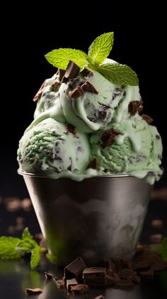
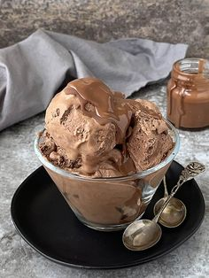
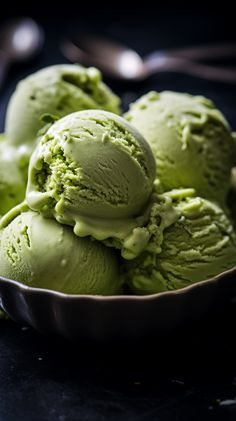

Fagyiaink házilag, saját, természetes alapanyagokból készülnek.
Alábbi fagyiaink közül tudnak válogatni:
Mentás
|

- 500 ml tej
- 125 ml habtejszín
- 55 g menta
- 6 db tojássárgája
- 100 g cukor
- fekete bors ízlés szerint (őrölt, 3-4 tekerés)
|
Csokis
|

- 1 doboz sűrített tej, 600 ml habtejszín (hideg)
- 1 maréknyi apróra vágott csoki, 280 g étcsokoládé
|
Áfonyás
|

- 125 ml cukrozatlan kakaópor
- 40 dkg kék áfonya
- 2 db banán
- 350 ml kókusztej, konzerv
|
Matcha
|

Matcha
1/4 csésze kókusztejszín vagy kókusztej
Cukor
Só
12 pillecukor
|
Oreós
|

5 dl habtejszín
340 g sűrített tej (cukrozott)
250 g fehér csokoládé
6 db oreo keksz
|
Epres
|

- 30 dkg eper
- 10 dkg porcukor
- 1 csomag vaníliás cukor
- 0.5 ek citromlé
- 1.5 dl tej
- 2 dl habtejszín
|